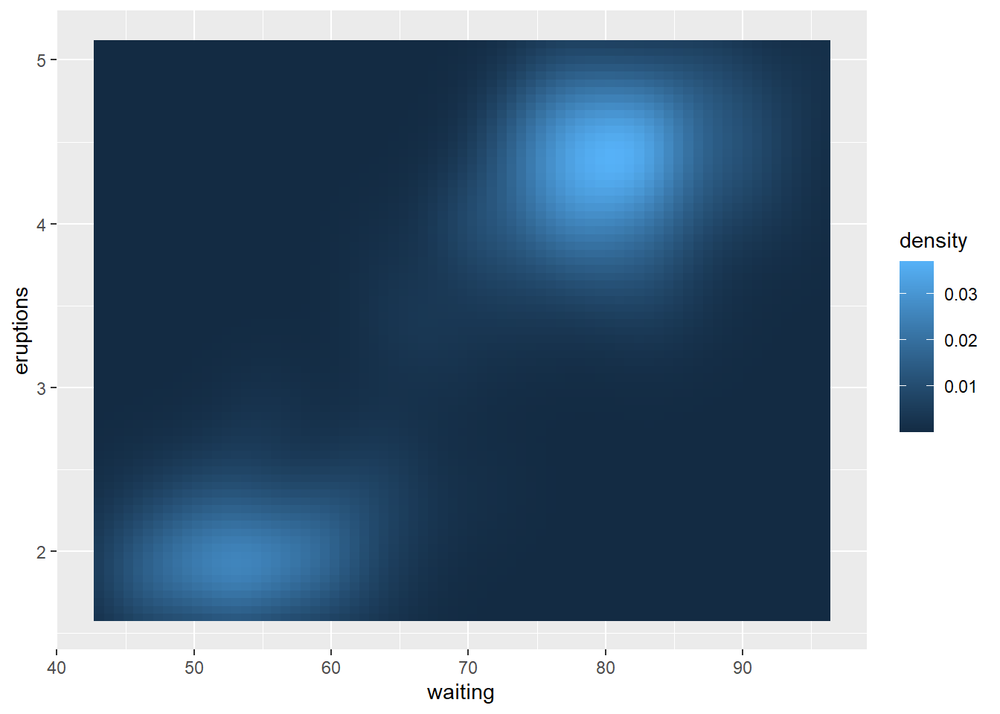

library(ggplot2)Introduction
We can weave rich narratives with formatted text and equations like \(y = \beta_0 + \beta_1 x + \epsilon\) very easily.
Reproducible
We can put our analysis in an environment that ensures reproducibility.
Added explanation
We can add videos discussing the analysis if we want.
Code and Output
We can easily include code and the resulting output and graphics.
We load a necessary package.
We can now create a plot.
ggplot(faithfuld, aes(waiting, eruptions)) +
geom_raster(aes(fill = density))
A Spatial Example
Interactive maps can provide a lot of information. We will create an interactive map using ggplot2, plotly, and the sf package.
Linking to GEOS 3.11.2, GDAL 3.6.2, PROJ 9.2.0; sf_use_s2() is TRUE
Attaching package: 'plotly'The following object is masked from 'package:ggplot2':
last_plotThe following object is masked from 'package:stats':
filterThe following object is masked from 'package:graphics':
layoutFirst, we use the st_read function from the sf package to read a shapefile related to North Carolina packages that is installed by default with the sf package. The imported shapefile is automatically converted to an sf data frame. The imported object has many variables, but we point out three:
NAME: the name of each North Carolina countyBIR74: the number of recorded births in each county in 1974.geometry: theMULTIPOLYGONassociated with each North Carolina county.
# import sf object from shapefile in sf package
nc <- sf::st_read(system.file("shape/nc.shp", package = "sf"),
quiet = TRUE)
# display first 3 rows of nc for certain variables
head(nc[c("NAME", "BIR74", "geometry")], n = 3)Simple feature collection with 3 features and 2 fields
Geometry type: MULTIPOLYGON
Dimension: XY
Bounding box: xmin: -81.74107 ymin: 36.23388 xmax: -80.43531 ymax: 36.58965
Geodetic CRS: NAD27
NAME BIR74 geometry
1 Ashe 1091 MULTIPOLYGON (((-81.47276 3...
2 Alleghany 487 MULTIPOLYGON (((-81.23989 3...
3 Surry 3188 MULTIPOLYGON (((-80.45634 3...In the code below, we:
- Use ggplot2 to create a choropleth map of
BIR74for each county usinggeom_sf.- We specify
fill = BIR74so that the fill color of each county is based on theBIR74variable. - We also associate the
NAMEvariable with thelabelaesthetic so that the name of each county is displayed when we hover over a county. - Use
scale_fill_viridis_cto change the color palette used for the fill color. - We assign this plot the name
ggsf.
- We specify
- Use
plotly::ggplotlyto make the graphic interactive.
The interactive graphic indicates the number of births in each county and the county name when we hover over a county.
# plot sf object using ggplot2
ggsf <-
ggplot(nc) +
geom_sf(aes(fill = BIR74, label = NAME)) +
scale_fill_viridis_c()
# make map interactive
ggplotly(ggsf)Is there a way to provide information from multiple variable simultaneously when we hover over a county? Yes! But we have to be creative. We:
- Use the
paste0function to create a new variable,info, that combines multiple variables into a single character string for each county. The\nindicates to start a new line. We add a new line before each variable name. - Add the
infovariable as a variable to thencdata frame.
# combine multiple variables into a character string
# (one per county)
info <- paste0(
"\nname: ", nc$NAME,
"\narea: ", nc$AREA,
"\nbirths in 1974: ", nc$BIR74,
"\nSIDS cases in 1974: ", nc$SID74)
# print first 2 values of info
info[1:2][1] "\nname: Ashe\narea: 0.114\nbirths in 1974: 1091\nSIDS cases in 1974: 1"
[2] "\nname: Alleghany\narea: 0.061\nbirths in 1974: 487\nSIDS cases in 1974: 0"# add info the nc
nc$info <- infoNow, we use info as the label aesthetic in geom_sf and specify tooltip = "label" so that only the label variable is displayed when we hover over a county.
# create map that fills based on BIR74 but the tooltip
# based on info
ggsf <-
ggplot(nc) +
geom_sf(aes(fill = BIR74, label = info)) +
scale_fill_viridis_c()
# show only label tooltip
ggplotly(ggsf, tooltip = "label")We can create an interactive plot using plot_ly. We:
- Specify
type = "scatter"andmode = "lines". - Associate the
infovariable inncwith thesplitattribute to draw the separate traces for each county. We could have usedNAME, but then only theNAMEof each county would be displayed when we hover. This way, we get additional information. - Associate the
BIR74variable inncwith thecolorattribute to fill each county with a color from a gradient. - Specify
showlegend = FALSEso that only the color scale is displayed and no legend related toinfo. This is a critical step. - Specify
alpha = 1so that the colors aren’t muted. - Specify
hoverinfo = "text"so the only thesplitinformation is displayed - Pipe this graphic into the
colorbarfunction and change the title to “BIR74” (otherwise it gets displayed twice).
plot_ly(nc,
color = ~BIR74,
split = ~info,
showlegend = FALSE,
alpha = 1,
type = "scatter",
mode = "lines",
hoverinfo = "text") |>
colorbar(title = "BIR74")